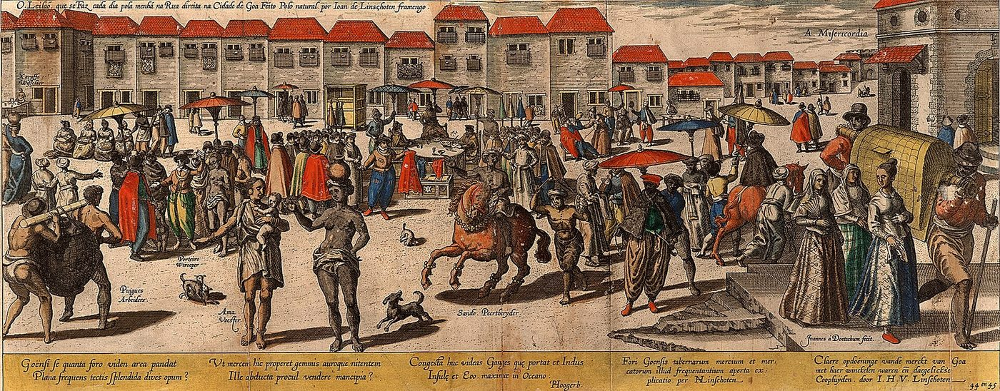
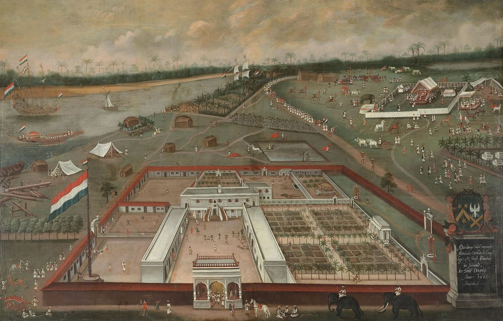
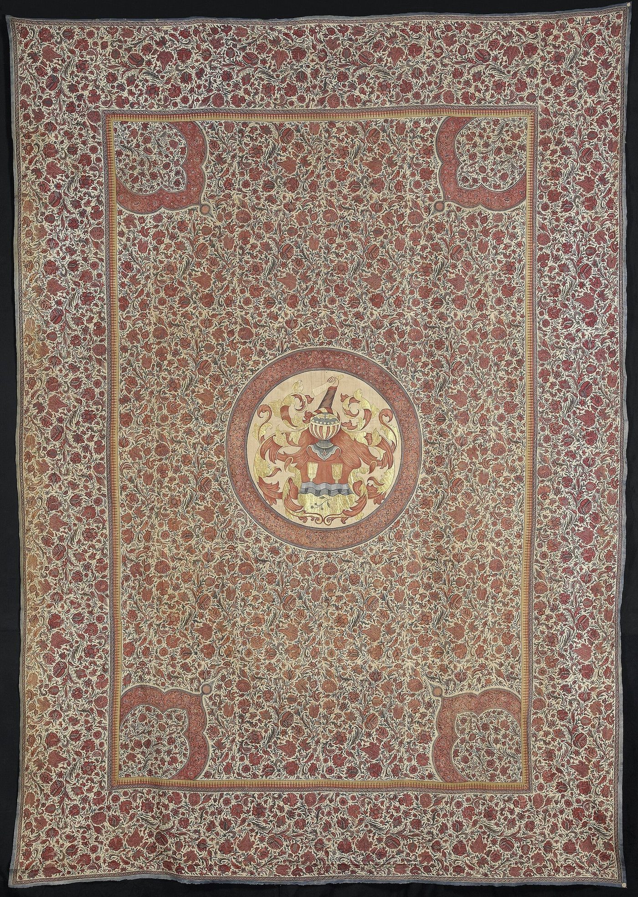

Chapter 18: The Early Modern Economy, c. 1200–1800¶
Chapter Overview
Between the founding of the Delhi Sultanate and the battle of Plassey, much of the subcontinent was ruled by states that lived on land revenue assessed and increasingly collected in money. This chapter looks first at the agrarian and fiscal institutions of the Sultanate, Vijayanagara, the Deccan sultanates and the Mughal empire: the iqṭāʿ, the manṣab and the jāgīr, the revenue settlements of Akbar’s reign, the silver currency that tied the Mughal economy to the wider world, the debate on the empire’s crisis, and the regional states of the eighteenth century, among them the Marathas and the Mysore of Haidar ʿAlī and Tīpū Sulṭān, whose story runs to 1799. It then turns to the sea: Indian and Armenian merchants in the trade of the sixteenth to eighteenth centuries, the Portuguese Estado da Índia, the Dutch and English companies, the export of Indian cotton cloth to Europe, the economy of Bengal before Plassey and the Maratha navy of the Āṅgres, and it ends with the trade in slaves that ran through all these economies, following it to the laws of 1843 and 1860 that withdrew legal recognition from slavery. Throughout, the chapter sets out the debates on how large and how dynamic this economy was, rather than repeating claims of a uniquely rich “golden” India.
18.1 Sources and Questions¶
The economic history of India after about 1200 rests on sources of a different kind from those of earlier chapters. Persian chronicles describe the policies of rulers, though usually from the court’s point of view and often long after the event. Administrative manuals, above all the Āʾīn-i Akbarī of Abū al-Faḍl, completed in the late 1590s, give the revenue rates, prices, wages and statistical tables of Akbar’s empire. Travellers — Ibn Baṭṭūṭa in the fourteenth century, Portuguese writers in the sixteenth, and French, English and Dutch observers such as François Bernier and Jean-Baptiste Tavernier in the seventeenth — describe cities, markets and courts. From the early seventeenth century, the records of the European trading companies become the largest single body of evidence for commerce, but they show Indian trade through the eyes of buyers with their own interests. Revenue papers in Persian, Rajasthani and Marathi, and the account books of merchant families, survive in quantity only from the later seventeenth century. The first volume of the Cambridge Economic History of India remains the standard survey of the whole period (Raychaudhuri and Habib 1982).
Three questions recur. How did states extract and spend the agrarian surplus? How far did money and markets reach into the countryside? And how did the arrival of armed European traders in the Indian Ocean after 1498 change the conditions of Indian commerce before the English Company became a territorial power in Bengal after 1757?
18.2 The Delhi Sultanate¶
18.2.1 Iqṭāʿ and Land Revenue¶
The sultans of Delhi (from 1206) governed through the iqṭāʿ, an institution brought from the eastern Islamic world. An iqṭāʿ was an assignment of the revenue of a territory to a military commander (muqṭīʿ), who used it to maintain troops for the sultan and to meet his own expenses, and who remitted any surplus to the treasury. The assignment was not a grant of land as property, and it was transferable at the sultan’s will. Under Iltutmish (r. 1211–1236) the iqṭāʿ became the main means of paying the ruling class, and the sultans tried, with varying success, to audit the accounts of the muqṭīʿs and to move them from one assignment to another (Raychaudhuri and Habib 1982; Wink 1990).
The revenue itself was a share of the peasant’s crop. According to the chronicler Ẓiyāʾ al-Dīn Baranī, whose Tārīkh-i Fīrūz Shāhī was completed around 1357, ʿAlāʾ al-Dīn Khaljī (r. 1296–1316) raised the demand in the Ganges–Yamuna Doab to half of the produce, assessed by measurement of the cultivated area, and added taxes on cattle and houses. He also brought much of the Doab directly under the treasury (khāliṣa) and paid many of his soldiers in cash rather than by assignment. Baranī presents these measures as a deliberate attack on the wealth of the rural chiefs and intermediaries, and Irfan Habib has argued that they marked a real increase in the state’s share of the surplus (Raychaudhuri and Habib 1982). Under Fīrūz Shāh Tughluq (r. 1351–1388) the policy was relaxed: assignments became in practice hereditary, and soldiers too were paid by assignment. Fīrūz also cut canals from the Yamuna and the Sutlej, which extended irrigation in the region of Hisar and Delhi (Habib 2008).
18.2.2 ʿAlāʾ al-Dīn Khaljī’s Market Regulations¶
The best documented attempt at price control in Indian history comes from ʿAlāʾ al-Dīn’s reign. Baranī describes it in detail. Faced with repeated Mongol invasions, culminating in a siege of Delhi in 1303, the sultan wished to keep a large standing army on modest pay, and Baranī places the regulations after that crisis. To make the pay suffice, he fixed the prices of grain, cloth, horses, cattle and slaves in Delhi. In the grain market, a controller (shaḥna-yi manḍī) supervised the trade; revenue from parts of the Doab was collected in grain and stored in royal granaries; the grain carriers, who brought grain to the city by caravan, were registered and made to give surety; peasants were made to sell their grain to the carriers at the field; and hoarding and regrating were forbidden. Cloth and other goods were sold at a single market, the Sarāʾ-i ʿAdl, to which merchants, among them Multanis, were advanced money from the treasury to bring cloth. Spies reported on prices, and short weight was punished with mutilation (Raychaudhuri and Habib 1982).
The account needs careful handling. Baranī wrote some forty years after ʿAlāʾ al-Dīn’s death, he admired the sultan’s firmness while deploring his impiety, and he used the reign to illustrate his own theory of kingship. It is unclear how far the controls reached beyond Delhi and its hinterland, and they did not survive the sultan’s death in 1316. Nevertheless, the regulations show a state that understood the connection between its revenue demand, the grain trade and the price level in its capital, and that was willing to use force to manage all three. The earlier texts on market supervision are discussed in Chapter 7.
18.2.3 Currency¶
The Sultanate’s coinage — the silver tanka and the billon or copper jital, established under Iltutmish — is described in Chapter 5, together with Muḥammad bin Tughluq’s experiment with brass or copper tokens (c. 1329–1332), which Baranī reports was defeated by forgery. Two points matter here. First, the Sultanate’s revenue system assumed that a large part of the demand would be paid in money, which required peasants and rural chiefs to sell grain to merchants. Second, the sultans’ fiscal demands depended on a steady supply of silver, much of which had to be imported. The monetisation of the agrarian economy, which reached its height under the Mughals, thus began under the Sultanate.
18.2.4 Towns, Trade and Technology¶
Delhi became one of the largest cities of the Islamic world. Ibn Baṭṭūṭa, who reached India in 1333 and served Muḥammad bin Tughluq as a judge in Delhi until 1342, describes its markets, the sultan’s largesse, the posts that carried news and goods along the roads, and the cost of the sultan’s campaigns (Ibn Baṭṭūṭa 1958). Merchants from Khurasan and Multan dealt in horses, slaves and luxury goods, and lent money to nobles. The Sultanate’s court workshops (kārkhānas) are described in Chapter 8. Irfan Habib has argued that several techniques spread in north India in this period, among them paper-making, the spinning wheel and the carding bow, and that they contributed to the growth of urban crafts (Habib 2008).
From the late fourteenth century, regional sultanates in Gujarat, Bengal, Malwa, Jaunpur and the Deccan (the Bahmanī kingdom, founded in 1347) took over much of the Delhi sultans’ territory. They kept the tanka and the iqṭāʿ, and several of them ruled important ports. The sultans of Gujarat, whose capital Ahmedabad was founded in 1411, drew revenue from the trade of Cambay and its neighbouring harbours, whose merchants are discussed in Chapter 12.
18.3 Vijayanagara and the South¶
The kingdom of Vijayanagara, founded around 1336 and centred on its capital at Hampi on the Tuṅgabhadrā, dominated south India until its army was defeated by an alliance of Deccan sultanates in 1565; successor states ruled by Vijayanagara’s former governors, the Nāyakas, continued in the Tamil country and Karnataka. Its gold varāha, which the Europeans called the “pagoda”, is discussed in Chapter 5.
Horses.
Vijayanagara’s wars with the Bahmanī sultanate and its successors depended on cavalry, and south India could not breed enough war horses (Chapter 12). Horses came by sea from Arabia and the Gulf to the ports of the Kanara and Konkan coasts. The Portuguese writer Duarte Barbosa, who described the coast around 1516, names Bhaṭkal as a port where horses were landed for Vijayanagara (Barbosa 1918). After Afonso de Albuquerque took Goa from the sultan of Bijapur in 1510, the Portuguese tried to channel the horse trade through Goa and to use it as a lever in their relations with both Vijayanagara and Bijapur. Horse imports were one of the largest items of the coastal trade and an important source of customs revenue (Subrahmanyam 1990; Pearson 1987).
Nāyakas and temples.
The kingdom’s military commanders, the nāyakas, held territories (amaram) on condition of maintaining troops and paying dues to the king. Historians have compared the system with the iqṭāʿ, though the nāyakas were more firmly rooted in their localities. Temples were major economic institutions, receiving endowments from kings, nāyakas and merchants, employing large staffs, lending money and investing in irrigation; the evidence from Tirupati in this period is discussed in Chapter 9 (Section 9.3.2).
Merchants and states.
Sanjay Subrahmanyam’s study of southern India between 1500 and 1650 argues that commerce, state power and revenue farming were closely entangled. Men who farmed revenues, held military commands and traded overseas — whom Subrahmanyam and C. A. Bayly called “portfolio capitalists” — were among the most dynamic figures of the age, and the coming of the Portuguese and then the Dutch altered but did not overturn this pattern (Subrahmanyam 1990; Subrahmanyam and Bayly 1988).
Historical Note: Portuguese visitors to Vijayanagara
Two Portuguese accounts of Vijayanagara survive from the reign of Kṛṣṇadevarāya (r. 1509–1529) and his successor. Domingo Paes visited the capital around 1520–1522, and Fernão Nuniz, a horse trader, lived there in the 1530s. Their narratives, translated by Robert Sewell in 1900, describe the size of the city, its markets, the Mahānavamī festival and the army (Sewell 1900). They are valuable eyewitness sources, but they were written by foreigners who saw mainly the court and the capital, depended on interpreters, and had reasons of their own to impress readers at home. The large figures they give for revenue, armies and the king’s wealth are impressions, not statistics.
18.4 The Deccan Sultanates¶
North of Vijayanagara lay the Bahmanī sultanate, founded in 1347 by commanders who rebelled against Muḥammad bin Tughluq, with its capital first at Gulbarga and from the early fifteenth century at Bidar. Between about 1490 and the 1520s it broke up into five successor states, of which three became major powers: the ʿĀdil Shāhīs of Bijapur, the Niẓām Shāhīs of Ahmadnagar and the Quṭb Shāhīs of Golconda. These sultanates are often treated only as Vijayanagara’s enemies or the Mughals’ victims, but they were commercial states in their own right, with ports on both coasts and close links with Iran and the Arabian Sea.
The Bahmanī and successor courts drew many of their officials and merchants from Iran and the Gulf. These “westerners” (āfāqīs) competed for office with the Deccan-born Muslim nobility and with Habshī commanders (Section 18.13), and the rivalry shaped Deccan politics for two centuries. The career of Maḥmūd Gāwān (1411–1481) shows how trade and statecraft were combined. A merchant from Gilan on the Caspian who came to the Bahmanī court by way of the Konkan port of Dabhol, he rose to be chief minister, reorganised the provincial administration, built the great madrasa at Bidar (1472), kept his own commercial interests through factors in the ports, and was executed in 1481 after a court intrigue (Eaton 2005).
Golconda was the richest of the successor states. Its territories included the alluvial diamond workings of the Krishna valley, the most productive in the world before the Brazilian finds of the eighteenth century (Chapter 8), and the cotton-weaving country of the Coromandel coast, whose cloth was exported through Masulipatnam to the Bay of Bengal, Southeast Asia and the Persian Gulf (Chapter 15, Section 15.4.2). The capital, Hyderabad, founded at the end of the sixteenth century, became one of the great cities of the Deccan. Much of the kingdom’s revenue was farmed to the highest bidder, and J. F. Richards’s study of the province after the Mughal conquest shows how revenue farming, trade and office reinforced one another (Richards 1975).
The outstanding example is Mīr Jumla (Muḥammad Saʿīd Ardistānī), a Persian who came to Golconda as a dealer in diamonds, became the sultan’s chief minister in the 1630s and 1640s, and conquered for Golconda much of the Karnatak, which he governed almost as a private domain. He owned ships trading to Iran, Arakan and Pegu, farmed the diamond mines, and dealt with the Dutch and English companies on equal terms. In 1656 he went over to the Mughals with his army and his wealth, and he died in 1663 as Aurangzeb’s governor of Bengal after a campaign in Assam. Sanjay Subrahmanyam and C. A. Bayly made him the type of the “portfolio capitalist”, who moved freely between trade, revenue farming and military command (Subrahmanyam and Bayly 1988). Aurangzeb conquered Bijapur in 1686 and Golconda in 1687, and the Deccan’s ports and revenues passed into the Mughal system, though the wars that followed with the Marathas (Section 18.5.9) devastated much of the region.
18.5 The Mughal Economy¶
Bābur’s victory at Pānīpat in 1526 founded the Mughal dynasty, but the empire’s institutions took shape under Akbar (r. 1556–1605), who annexed Gujarat in 1572–73 and Bengal in the later 1570s. At its height in the late seventeenth century, under Aurangzeb (r. 1658–1707), the empire covered most of the subcontinent. The best general accounts are those of Richards (1993) and, for the agrarian system, Habib (1999b).
18.5.1 Land Revenue: Zabṭ and the Dahsāla¶
As in the Sultanate, the state’s main revenue was a share of the crop, called māl or kharāj. Sher Shāh Sūr (r. 1540–1545) had introduced a schedule of crop rates based on measurement. Akbar’s finance minister, Rāja Todar Mal, developed this into the system known as zabṭ. The cultivated area of each peasant was measured with a standard measure, and the revenue was assessed by applying a cash rate per unit of area that varied by crop. In 1580, after experiments with annual assessments, rates were fixed for each locality on the basis of the average produce and prices of the preceding ten years: this was the dahsāla (“ten-year”) settlement. The zabṭ was applied in the core provinces of northern India; elsewhere the state used crop-sharing (baṭāʾī), estimation of the standing crop (kankūt) or fixed sums agreed with local chiefs. The official schedules were derived from rates that claimed one third of the produce, but Habib argued that in practice it was set to take most of the peasant’s surplus and often approached half of the crop (Habib 1999b; Moosvi 1987).
Between the state and the peasant stood the zamīndārs, a broad category that included hereditary chiefs and holders of rights to a share of the revenue of villages. The Mughals tried to make them collectors of revenue on the state’s behalf, allowing them a fixed allowance, but they remained a source of armed power and of resistance (Habib 1999b).
18.5.2 Manṣab and Jāgīr¶
Every officer of the empire held a rank (manṣab). By the 1590s each rank had two numbers: zāt, which fixed the holder’s personal pay and status, and sawār, which fixed the number of cavalry he had to maintain. Most manṣabdārs were paid not in cash but by assignment of the estimated revenue (jamaʿ) of a territory, the jāgīr. The rest of the revenue went to the emperor’s own treasury, the khāliṣa. Like the iqṭāʿ, the jāgīr was not property and was frequently transferred, so that an assignee had little reason to protect the long-term prosperity of his villages. Habib argued that this pressure, together with a growing gap between the assessed revenue (jamaʿ) and what was actually collected (ḥāṣil), produced an agrarian crisis in the late seventeenth century that weakened the empire (Habib 1999b; Richards 1993).
Shireen Moosvi used the statistical tables of the Āʾīn-i Akbarī to reconstruct the revenue, yields, prices and wages of the empire around 1595. Her study concludes that the land revenue was by far the largest part of the surplus, and that a small ruling class of manṣabdārs and the imperial household appropriated a large share of total output (Moosvi 1987). The Mughal economy was thus highly unequal: its great cities, monuments and workshops were paid for from a revenue demand that left most peasants close to subsistence.
18.5.3 Money, Silver and Prices¶
Because the revenue was assessed in money and largely collected in money, peasants had to sell a large part of their crop. The empire’s silver rupee and copper dām (Chapter 5) were struck at imperial mints for anyone who brought bullion, and the sarrāfs who exchanged and assayed coin, remitted funds by hundī and lent to merchants and officials became indispensable to the fiscal system (Chapter 6). In the seventeenth century they also insured goods in transit (Habib 1964).
India produced little silver, and the rupee depended on imports. From the later sixteenth century, very large quantities arrived. Much of it was silver from Spanish America, which reached India through Europe and the Levant, through the Persian Gulf, and in the ships of the European companies; Japanese silver came through Dutch and Asian traders; and gold came from many sources. Estimates based on mint output and surviving coins suggest that the volume of silver coinage rose greatly between the 1580s and the mid-seventeenth century. Habib and others have linked these imports to a rise in prices and to deeper monetisation of the land revenue; how far there was a Mughal “price revolution”, and how it compares with Europe’s, remains debated (Habib 1999b; Richards 1993; Raychaudhuri and Habib 1982). J. F. Richards placed Mughal state finance in this wider setting, arguing that the empire’s cash revenue system was one of the engines of demand for the world’s bullion (Richards 1981).
18.5.4 Prices, Wages and Living Standards¶
The Āʾīn-i Akbarī gives, alongside its revenue rates, lists of prices for grain and other goods and of the daily wages paid to labourers and craftsmen in the imperial establishments: an ordinary labourer received two or three dāms a day, skilled workers more. Shireen Moosvi converted these figures into quantities of grain and other necessities and concluded that an unskilled labourer’s wage bought a diet of coarse grain, pulses, oil and salt for himself and a family, with little to spare (Moosvi 1987). These figures are among the very few direct measures of living standards for any part of Asia before the nineteenth century, and they have been drawn into the debate on when Europe and Asia diverged.
That debate turns on how wages are compared. Measured in silver, Indian wages in the seventeenth and eighteenth centuries were far below English wages. Measured in grain — the quantity of the staple food a day’s wage would buy — the gap was much smaller, because food was cheap in India. Prasannan Parthasarathi argued from the records of the English Company in south India that the grain wages of weavers and spinners in the eighteenth century were comparable with those of English textile workers, so that India’s competitive advantage in cloth came from cheap food rather than from poverty (Parthasarathi 1998). Stephen Broadberry and Bishnupriya Gupta, assembling wage and price series for several regions, found that Indian grain wages were close to English levels in the early seventeenth century but fell behind thereafter, and that silver wages were low throughout; in their view the divergence began well before colonial rule (Broadberry and Gupta 2006). Both sides depend on a small number of observations, drawn from a few places and occupations and recorded by the state or the companies, and they may not represent the peasantry who were the great majority. What they show is that the question can now be argued from evidence, and that the answer is likely to differ by region and by period (see the debate box below).
18.5.5 Towns, Manufactures and Merchants¶
Mughal India had several very large cities — Agra, Delhi, Lahore, Ahmedabad, Dhaka, Patna — and many market towns. Court workshops (kārkhānas) supplied the emperor and the nobles (Chapter 8), but most manufacture, including almost all export textiles, was carried out by village and urban artisans working for merchants, often against advances. Grain and other bulk goods were carried over long distances by banjārās, caravans of pack oxen, and on the rivers (Chapter 10). Merchant and banking families, Hindu, Jain, Muslim and Parsi, financed trade and the state. The greatest of them, the Jagat Seths of Murshidabad, are discussed in Chapter 6 (Section 6.6.1).
European observers drew contrasting conclusions. Bernier, who lived in India in the 1660s, argued that because the emperor was owner of all the land and assignments were constantly transferred, no one had an interest in improvement, and the country was being ruined. His account influenced European ideas of “oriental despotism” for two centuries. W. H. Moreland, an official of the colonial government, concluded from the Āʾīn and European sources that the mass of the population in 1600 lived no better than in his own day (Moreland 1920). Later historians have criticised both: Bernier generalised from the court, and Moreland’s comparisons rested on fragile figures. But the basic picture of a rich ruling class and a poor peasantry has been confirmed rather than overturned by later research (Moosvi 1987; Habib 1999b).
18.5.6 Capitalist Potentialities?¶
In a well-known essay, Irfan Habib asked whether Mughal India could have developed towards capitalism on its own. He surveyed the extent of commodity production for the market, the large stocks of merchant capital, the credit network of the sarrāfs and the hundī, and the existence of artisans working for merchants under advances. His answer was cautious. The economy contained many elements that in Europe preceded industrial capitalism, but the structure of the Mughal ruling class, which appropriated the surplus as land revenue and spent it on consumption and armies, the merchants’ dependence on that class, and the slow pace of technical change set limits on how far those elements could develop (Habib 1969). The question is counterfactual and cannot be settled, but the essay remains the starting point for discussion of the Mughal economy in comparative terms.
Debate: How large was the Indian economy before 1800?
Angus Maddison’s long-run estimates of world output give India’s share of world GDP as about 24.5 per cent in 1500, 22.4 per cent in 1600, 24.4 per cent in 1700 and 16.0 per cent in 1820 (Maddison 2001). These figures are widely quoted, often without their caveats:
-
They are rough back-projections. For these dates there are no national accounts; Maddison built the figures largely from estimates of population and an assumed level of income per head, which he held roughly constant for India across these three centuries.
-
A large share of world output mainly reflects a large share of world population. Maddison’s own assumptions put Indian income per head below that of western Europe throughout this period.
-
More recent work by Broadberry, Custodis and Gupta, using wage, price and output data, finds Indian GDP per head declining from the seventeenth century while Britain’s rose, so that India was already falling behind Britain well before 1757 (Broadberry et al. 2015). Parthasarathi has argued, on the other hand, that the living standards and competitiveness of south Indian weavers in the eighteenth century compared well with those of British workers (Parthasarathi 2011).
The estimates show that India was a very large economy, with a large population and very large manufacturing and trading sectors. They do not show that Indians were richer than Europeans, and they do not support the image of a uniquely wealthy “golden bird” (sone kī ciṛiyā). The later decline of India’s share is discussed in Chapter 19.
18.5.7 Explaining the Crisis of the Empire¶
Why did the Mughal empire lose its hold on the provinces so quickly after 1707? Economic historians have given several answers, which differ less in the facts they cite than in the weight they give to them.
The answers of the “Aligarh school”, developed in the 1950s and 1960s, located the crisis inside the imperial system. Satish Chandra argued that the empire faced a “jāgīrdārī crisis”: the number of manṣabdārs grew faster than the revenue available for assignment, so that officers waited long for jāgīrs, received assignments whose real yield fell short of their nominal value, and competed bitterly for the productive ones; factional struggle at court after 1707 was, on this view, a struggle over a shrinking pool of revenue (Chandra 1959). M. Athar Ali’s study of the nobility under Aurangzeb showed how far its size and composition changed during the long wars in the Deccan, as the emperor admitted Deccani and Maratha commanders to high rank in order to win them over, which intensified the pressure on jāgīrs (Ali 1966). Irfan Habib added the agrarian side: the transferable jāgīr encouraged assignees to extract as much as possible in the short term; peasants responded by flight and, with the zamīndārs, by armed resistance; and the great revolts of the later seventeenth century — of the Jats near Agra and Mathura, the Satnāmīs in 1672, the Sikhs in the Punjab and, above all, the Marathas — were in his interpretation the political expression of an agrarian crisis (Habib 1999b).
From the 1980s this account was challenged from several directions. Muzaffar Alam’s study of Awadh and the Punjab in the first half of the eighteenth century found that the decline of central control went with the consolidation of power by provincial governors, local zamīndārs and merchants, and that in parts of both provinces agriculture and trade grew; the “decline” of the empire was in part the rise of regional societies that no longer needed the centre (Alam 1986). Karen Leonard’s thesis that the great banking firms withdrew their support from the centre (Chapter 6) pointed in the same direction, as did Bayly’s account of north Indian towns and merchants (Section 18.5.8). J. F. Richards stressed the cost and the political consequences of Aurangzeb’s twenty-five years of campaigning in the Deccan after 1681, which drew the emperor, the court and the army away from the north and failed to incorporate the Maratha country (Richards 1993). Habib, for his part, maintained the agrarian interpretation in the revised edition of his study (Habib 1999b).
These views are not mutually exclusive, and recent surveys combine them. The essays collected by Muzaffar Alam and Sanjay Subrahmanyam treat the Mughal state as a negotiated structure that depended on the cooperation of regional elites and that lost that cooperation when it could no longer reward it (Alam and Subrahmanyam 1998); those collected by P. J. Marshall set out the long argument over whether the eighteenth century should be seen as a period of collapse or of continuity, and how far it prepared the way for the colonial economy (Marshall 2003). Two points are now widely, though not universally, accepted. The crisis was political and fiscal before it was economic, and the economy of the subcontinent in the first half of the eighteenth century was not uniformly in decline. Whether the peasantry was worse off in 1750 than in 1650 cannot be settled from the available evidence.
18.5.8 The Eighteenth Century: Decline or Regional Dynamism?¶
After Aurangzeb’s death in 1707 the Mughal centre lost control of most provinces. Nādir Shāh’s sack of Delhi in 1739 and the Afghan invasions that followed devastated the capital region. For an older historiography, including Habib’s work on the agrarian crisis, the eighteenth century was a period of political and economic decline that opened the way to British conquest. Ashin Das Gupta’s study of Surat shows one aspect of this decline: between about 1700 and 1750, the great shipowning merchants of the Mughal port lost their markets as the Mughal, Safavid and Ottoman empires weakened, and their trade passed in part to English-controlled Bombay (Das Gupta 1979).
Since the 1980s many historians have stressed regional dynamism instead. C. A. Bayly’s study of north India shows new regional courts, such as those of Awadh and Banaras, towns that grew as others declined, and merchant and banking groups that adapted to the new states and later to the Company (Bayly 1983). Bengal under its nawābs, Hyderabad, the Maratha territories and the Mysore of Haidar ʿAlī and Tīpū Sulṭān were all strong regional economies. The two views are not wholly opposed: political fragmentation could coexist with regional growth, and the costs of war fell heavily on some regions and lightly on others. How the economy of the 1750s compared with that of 1700 remains an open question, and it bears directly on the debate about the effects of colonial rule (Chapter 19). Two of the regional states, the Maratha polity and Mysore, show how differently the successors of the Mughals raised and used revenue; Bengal, the richest of the Mughal provinces, is discussed in Section 18.11.
18.5.9 The Maratha Revenue System¶
The largest of the successor powers was built by the Marathas. Śivājī, crowned king at Raigad in 1674, created a kingdom (svarājya) in the western Deccan and claimed from the territories around it a share of their revenue. Two such claims became the basis of later Maratha expansion. Chauth (“a quarter”) was a demand for one quarter of the assessed land revenue of a territory that was not under direct Maratha administration; for those who paid, it bought freedom from Maratha raids, and contemporaries and later historians alike have compared it to protection money. Sardeshmukhī was a further claim to one tenth of the revenue, which the Maratha king asserted as the hereditary chief (sardeshmukh) of the deshmukhs, the local revenue officials of the Deccan. In 1719, during the struggles at the Mughal court, the Peshwa Bālājī Viśvanāth obtained imperial recognition of the right of Śivājī’s grandson Shāhū to collect chauth and sardeshmukhī in the six Mughal provinces of the Deccan, in return for military support (Gordon 1993).
Under the Peshwas Bājī Rāo I (1720–1740) and Bālājī Bājī Rāo (1740–1761), Maratha armies carried these claims into Malwa, Gujarat, Bundelkhand and Orissa. In the 1740s they raided western Bengal, until in 1751 the nawāb ʿAlīvardī Khān agreed to pay chauth and gave up effective control of Orissa (Marshall 1987). Collection in the conquered regions passed to the great commanders — the Śindes, Holkars, Gāyakvāḍs and the Bhosles of Nagpur — who held lands and revenues as saranjām, assignments for the upkeep of troops, and much of the revenue was farmed. In the Maratha homeland the state worked through institutions inherited from the Deccan sultanates and the Mughals: the village headman (pāṭīl) and accountant (kulkarṇī), and the hereditary deshmukh and deshpāṇḍe of the district. The Peshwas’ government at Pune kept revenue papers and accounts in Marathi on a very large scale, and these records are among the richest sources for the economic history of eighteenth-century India. Stewart Gordon has argued that the Maratha state should not be seen merely as a raiding power: in regions such as Malwa it moved from tribute-taking to settled administration, and its fiscal practice continued and adapted the Mughal and Deccani systems rather than replacing them (Gordon 1993). For the cultivator, the result could still be heavy: in contested regions Mughal assignees, Maratha collectors and local chiefs might all claim a share of the same harvest.
18.5.10 Mysore under Haidar ʿAlī and Tīpū Sulṭān¶
In the south, Haidar ʿAlī, a cavalry commander in the service of the Woḍeyar rulers of Mysore, made himself the effective master of the kingdom around 1761. He and his son Tīpū Sulṭān (r. 1782–1799) made Mysore one of the most formidable military states of the subcontinent. They fought four wars with the English Company, and Tīpū was killed when the Company’s army stormed his capital, Srirangapatna, in 1799. These events lie after 1757, but Mysore belongs to the debate about the eighteenth century because it shows what an Indian regional state could attempt.
Like several states of the period, including the Company itself, Mysore needed far more revenue than before to pay a large standing army equipped with firearms and trained partly on European lines. Its rulers curtailed the power of the local chiefs (pāḷeyagāras, the “poligars” of English sources) and collected the land revenue increasingly through salaried officials rather than through intermediaries. C. A. Bayly called this pattern “military fiscalism” (Bayly 1988). Tīpū went further than most contemporaries in trying to make the state itself a trader. He declared state monopolies of valuable exports such as sandalwood and the pepper of the Malabar territories his father had conquered, forbade trade with the English, issued regulations for a state commercial department, and sought to set up trading establishments abroad, among them at Muscat. In the later 1780s he sent embassies to the Ottoman sultan and to the king of France, seeking alliances and commercial privileges. The encouragement of sericulture in Mysore is also usually traced to his reign (Habib 1999a; Bayly 1988).
Historians disagree on how to judge these measures. Some, notably the contributors to a volume edited by Irfan Habib, see in them a deliberate programme of modernisation and resistance to colonial expansion (Habib 1999a). Others stress that the monopolies served the needs of the army and the treasury, and that they burdened merchants and cultivators much as the Company’s own monopolies did. Both views agree that Mysore’s commercial policy was aimed above all at the economic and political power of the English Company, and that it ended with the state’s destruction in 1799.
18.6 Indian Merchants and the Ocean, 1500–1750¶
The arrival of the Portuguese did not end Asian trade in the Indian Ocean. For most of the sixteenth and seventeenth centuries, the greater part of the trade of India’s ports was carried in Asian ships by Asian merchants, and it grew (Das Gupta and Pearson 1987; Pearson 2003).
Gujarat and Surat.
Gujarat’s merchants — Hindu and Jain baniyās, Muslim Bohras and Khojas, Parsis and others — traded to the Red Sea, the Persian Gulf, East Africa and Southeast Asia. M. N. Pearson’s study of their response to the Portuguese argues that the sultans of Gujarat, whose revenue came mainly from land, did not contest control of the sea, and that most merchants accommodated themselves to Portuguese passes rather than resisting them (Pearson 1976). After the Mughal conquest, Surat replaced Cambay as Gujarat’s chief port. Its merchants included the banker and trader Vīrjī Vorā, who dealt extensively with the English Company in the mid-seventeenth century, and the shipowner Mullā ʿAbd al-Ghafūr (d. 1718), whose ships sailed to the Red Sea and the Gulf. Surat was also the port for pilgrims to Mecca, and the ships of the emperor and his nobles took part in the trade (Das Gupta 1979).
The Coromandel coast.
The textile-producing coast of the south-east exported painted and woven cloth to Southeast Asia, the Persian Gulf and, through the companies, to Europe. S. Arasaratnam’s study of the period 1650–1740 shows the many merchant groups involved — Telugu Komaṭi and Balija ceṭṭis, Tamil Muslim Marakkāyars and Chulias, and others — and the competition between the companies and Asian traders for cloth from the weaving villages around Masulipatnam, Pulicat, Madras and Nagapattinam (Arasaratnam 1986; Arasaratnam 1994).
Bengal.
Bengal exported cotton cloth, raw silk, sugar, rice, saltpetre and opium. Om Prakash’s study of the Dutch East India Company in Bengal shows that the companies paid largely in imported silver, and argues that their demand raised output and employment in the province’s textile and silk industries (Prakash 1985). The province’s economy before Plassey is discussed more fully in Section 18.11.
Malabar.
The pepper coast remained the home of the Muslim Māppiḷa merchants, of Hindu and Jewish traders and of the Syrian Christian communities. Its trade passed through Calicut, Cochin and many smaller harbours, and was the main target of Portuguese and later Dutch attempts at monopoly (Prange 2018; Malekandathil 2010; Das Gupta 1967).
The Jews of Cochin.
Jewish merchants had been settled on the Malabar coast for centuries; the copper plates granting privileges to Joseph Rabban are discussed in Chapter 4. In the sixteenth century the community’s centre moved from Kodungallur to Cochin, where the Rāja gave the Jews land beside his palace at Mattancherry; the synagogue of the “Paradesi” (foreign) Jews, built there in 1568, still stands. The community was divided between the older Malabari Jews and newer arrivals from the Middle East and the Iberian diaspora. Portuguese rule was hard on them, but after the Dutch took Cochin in 1663 Jewish merchants became brokers and suppliers to the Dutch Company; the most prominent, Ezekiel Rahabi (d. 1771), served as the Company’s principal merchant at Cochin for decades; his Hebrew letter of 1768 to a correspondent in the Netherlands is an early account of the community’s history. Most of the community emigrated to Israel in the years after 1948 (Malekandathil 2010).
Others in the trade.
Indians were only part of the cast. Arab, Persian and Turkish merchants traded at Surat and the Malabar ports; Armenian merchants, especially from New Julfa in Isfahan after 1605, built networks that reached from Iran to Agra, Surat, Hugli and Madras (Section 18.7); in the eighteenth century, as Gagan Sood has shown, Indian merchants, scribes and pilgrims moved in a dense circulation of letters, credit and people between India and the cities of Iraq, Iran and Arabia (Sood 2016); Malay, Javanese and Chinese traders dominated much of the eastern trade; and the Portuguese themselves soon traded privately alongside Asians (Pearson 2003; Chaudhuri 1985). Overland, Multani and Punjabi Khatri merchants and bankers settled in Iran, Central Asia and as far as Astrakhan on the Volga (Chapter 10) (Dale 1994; Levi 2002b).
18.7 Armenian Merchants¶
Among the foreign merchant communities of Mughal India, the Armenians had a distinctive place. Armenian traders were already known in north India in Akbar’s reign, but their great expansion followed a forced migration. In 1604–1605 Shah ʿAbbās I of Iran, at war with the Ottomans, removed the inhabitants of Julfa, a prosperous Armenian merchant town on the river Araxes, and resettled them at New Julfa, a suburb of his capital Isfahan. The shah gave the New Julfans privileges and made them the principal exporters of Iranian raw silk, which they carried overland through the Ottoman empire to the Mediterranean and by the Volga route to Russia and northern Europe (Aslanian 2011).
From New Julfa, Armenian commercial networks spread in the seventeenth century across much of Eurasia, to Venice, Livorno, Marseille and Amsterdam in the west, to Moscow, and eastwards to India, Burma and Southeast Asia. In India, Armenian merchants settled at Agra, Surat, Hughli, Saidabad near Kasimbazar, Dhaka, Patna and Madras, and later at Calcutta. They bought Indian textiles, indigo and spices for Iran and the Levant, and brought silver and other goods in return. Sebouh Aslanian’s study of their surviving correspondence shows a network centred on New Julfa, where family firms sent out agents under commenda-type contracts: the agent travelled with his master’s capital, traded on his behalf across the Indian Ocean and the Mediterranean, and shared the profit on agreed terms. Trust rested on a dense circulation of letters, on the authority of community institutions in New Julfa, and on the church, rather than on any state’s courts (Aslanian 2011). Like the Multani and Khatri merchants who worked in Iran and Central Asia, the Armenians were a trading diaspora operating across the borders of several empires; Stephen Dale’s study of the Indian merchants in Iran sets the two communities side by side (Dale 1994), and K. N. Chaudhuri counts the Armenians among the major merchant groups of the ocean (Chaudhuri 1985).
The European companies treated the Armenians both as competitors and as partners. In 1688 the English East India Company made an agreement with representatives of the Armenian merchants that allowed them to travel and send goods on Company ships and to live and trade in its settlements on the same terms as the English, in the hope of drawing their trade through English hands. In Bengal, Armenians were prominent in the inland trade in cloth and saltpetre and competed with the companies for the same goods. At Madras, English private traders sometimes sent ships to Spanish Manila under Armenian names, because the Spanish authorities excluded most other foreigners. The fall of Isfahan to Afghan invaders in 1722, and the exactions of Nādir Shāh in the following decades, broke the commercial power of New Julfa, and many of its families moved away. The Armenian communities of Madras and Calcutta survived as independent centres into the colonial period (Aslanian 2011).
18.8 The Portuguese Estado da Índia¶
18.8.1 Vasco da Gama¶
Vasco da Gama’s fleet left Lisbon in 1497, rounded the Cape of Good Hope, sailed up the East African coast to Malindi, and reached the coast near Calicut in May 1498. The voyage across the Arabian Sea was made with a pilot taken on at Malindi, a Muslim pilot of the western Indian Ocean whose identification with the Arab navigator Aḥmad ibn Mājid is a later legend (Section 14.8.3). The anonymous journal of the voyage and the later chroniclers record the reception at Calicut: the Zamorin (Sāmūtiri) received the Portuguese as he would other foreign merchants, but his officials scorned the goods they had brought as gifts, and relations with the Muslim merchants of the port quickly became hostile. Da Gama left with a cargo of pepper and spices and reached Portugal in 1499 (Subrahmanyam 1997).
18.8.2 Violence, Forts and the Cartaz¶
The Portuguese came to the Indian Ocean as a crusading and commercial power at once. Pedro Álvares Cabral’s fleet of 1500 fought with Calicut and made an alliance with its rival, the ruler of Cochin, where the Portuguese built their first fort in India in 1503. On his second voyage (1502–1503), Vasco da Gama captured a ship returning from Mecca with pilgrims and goods and burned it with great loss of life, and bombarded Calicut (Subrahmanyam 1997). Under the first viceroys, Francisco de Almeida (1505–1509) and Afonso de Albuquerque (1509–1515), the Estado da Índia took Goa (1510; Figure 18.1), Malacca (1511) and Hormuz (1515), and later acquired Bassein (1534), Diu (1535) and Daman (1559) from the sultans of Gujarat.


The Estado’s main instrument at sea was the cartaz, the Portuguese pass that Asian ships on the routes it claimed were required to carry (Section 15.10). The system was a form of protection-selling: it yielded revenue from customs rather than a true monopoly of trade, and it was enforced only where Portuguese fleets were present. Many Gujarati merchants bought passes and continued to trade; others evaded the patrols (Pearson 1987, 1976).
18.8.3 The Battle of Diu, 1509¶
The Mamluk sultan of Egypt, whose revenues depended on the Red Sea spice trade, sent a fleet under Amīr Ḥusayn al-Kurdī to the Indian coast. In alliance with Malik Ayāz, Gujarat’s governor of Diu, and with ships from Calicut, it defeated a Portuguese squadron at Chaul in 1508, killing the viceroy’s son. On 3 February 1509 Almeida attacked the allied fleet in the harbour of Diu and destroyed it. Malik Ayāz’s support for his allies was half-hearted, and he made terms with the Portuguese after the battle (Pearson 1987; Subrahmanyam 1997).
Diu showed that well-armed Portuguese ships could defeat Asian fleets in battle. It did not give Portugal control of the Indian Ocean. The Ottomans, who conquered Egypt in 1517, sent fleets to the Indian Ocean and besieged Diu in 1538; Gujarat’s forces besieged it again in 1546. The Red Sea route for pepper and spices, much reduced in the early sixteenth century, revived from the middle of the century, and Asian shipping continued to carry most of the ocean’s trade (Pearson 1987; Pearson 2003).
18.8.4 Calicut and the Kuñjāli Marakkārs¶
Calicut, whose prosperity depended on the Muslim merchants the Portuguese wished to exclude, resisted longest. Its naval defence was led in the sixteenth century by a series of Muslim commanders from Malabar seafaring families who bore the title Kuñjāli Marakkār. From their fortified base at Kottakkal on the north Malabar coast, they used fleets of small, fast oared vessels to attack Portuguese shipping and protect Calicut’s trade. Resistance was also given a religious frame: Zayn al-Dīn al-Maʿbarī’s Tuḥfat al-Mujāhidīn, written in the 1580s, called on Muslims to fight the Portuguese. The Kuñjālis’ power eventually alarmed the Zamorin himself, who joined the Portuguese in besieging Kottakkal; the last Kuñjāli surrendered in 1600 and was executed at Goa (Malekandathil 2010; Prange 2018; Pearson 1987).
18.8.5 Assessment¶
The Portuguese brought something new to the Indian Ocean: a state that claimed the right to license navigation at sea and used armed ships to enforce that claim. In this sense it is right to treat 1498 as a turning point. But the older picture of a peaceful ocean destroyed at a stroke needs qualification. Piracy and naval raiding were not new (Chapter 12); the Portuguese never controlled more than a part of the trade; and Asian merchants, rulers and shippers adapted to their presence. M. N. Pearson’s survey concludes that the Portuguese impact on the land-based states of India was small, and that on the sea it was greatest in the pepper trade of Malabar and in the customs revenues of the ports they held (Pearson 1987); Sanjay Subrahmanyam’s history of the Portuguese empire in Asia reaches a similar judgement from the Portuguese side (Subrahmanyam 1993).
18.9 The Dutch and English Companies¶
18.9.1 The Companies and Their Settlements¶
From the early seventeenth century, the Portuguese were challenged and then overtaken by chartered companies from northern Europe: the English East India Company (chartered on 31 December 1600), the Dutch Vereenigde Oostindische Compagnie (VOC, 1602), and later the Danish and French companies. Unlike the Estado, these were companies of merchants and investors, but their charters allowed them to keep armed forces, build forts and make treaties (Chaudhuri 1978; Prakash 1998). Table 18.1 lists their main Indian settlements, and Figure 18.2 shows the Dutch lodge at Hughli in 1665.


| Body | Founded | Main Indian settlements |
|---|---|---|
| Portuguese Estado da Índia | 1505 | Cochin (fort 1503), Goa (1510), Bassein (1534), Diu (1535), Daman (1559); Hugli (a private Portuguese settlement, until 1632) |
| English East India Company | 1600 | Surat (1613), Madras (1639), Bombay (1668), Calcutta (1690) |
| Dutch VOC | 1602 | Pulicat, Masulipatnam, Chinsura in Bengal, Nagapattinam (1658), Cochin (1663) |
| Danish East India Company | 1616 | Tranquebar (1620) |
| French Compagnie des Indes | 1664 | Pondicherry (1674), Chandernagore, Mahé |
The VOC’s main interest lay in the spices of the Indonesian islands, and its Indian factories were valued above all for the cotton cloth with which spices were bought; it also traded Japanese silver and copper into India. The English Company, after its ships defeated a Portuguese fleet off Surat in 1612, obtained permission to trade there, and the embassy of Sir Thomas Roe to Jahangir (1615–1619) sought better terms. Bombay, part of the dowry of Catherine of Braganza on her marriage to Charles II in 1661, was transferred to the Company in 1668.
18.9.2 What the Companies Bought and How They Paid¶
The companies came to buy pepper and spices, but by the late seventeenth century cotton textiles had become the largest item in the English Company’s purchases in India, followed by raw silk, indigo and saltpetre (Chaudhuri 1978). Because there was little demand in India for European goods, the companies paid mainly in silver and gold. K. N. Chaudhuri’s study of the English Company’s Asian trade between 1660 and 1760 shows how its orders, prices and shipping were managed from London, and how dependent it was on Indian merchants, brokers and bankers for buying cloth and raising money. Om Prakash has argued that the import of bullion to pay for Indian goods expanded the money supply and stimulated production and employment in the exporting regions (Prakash 1998, 1985). The companies also took part in the “country trade” between Asian ports, both on their own account and through the private trade of their servants.
18.9.3 Companies, Merchants and the Mughal State¶
Before the mid-eighteenth century, the companies were tenants of Indian rulers and depended on their goodwill. When the English Company went to war with the Mughals in 1686–1690, it was defeated and had to seek pardon from Aurangzeb. When the pirate Henry Every captured the emperor’s ship Ganj-i Sawāʾī off Surat in 1695, the Mughal authorities held the English Company responsible and confined its officers at Surat until it agreed to help police the seas. In 1717 the emperor Farrukhsiyar granted the English Company the right to trade free of customs in Bengal for an annual payment of 3,000 rupees; the misuse of the Company’s passes (dastaks) by its servants for their private trade became a source of conflict with the nawābs of Bengal. In the 1740s and 1750s the English and French companies fought each other, and took sides in succession disputes, in the Carnatic; this was the prelude to the Company’s rise to territorial power in Bengal, discussed in Chapter 19 (Richards 1993; Prakash 1998).
18.10 Indian Textiles and the World¶
The companies made Indian cotton cloth a mass consumer good in Europe. Chintz from the Coromandel coast and Gujarat (Figure 18.3), and calicoes and muslins from Bengal, were sold in England, the Netherlands and France, re-exported to West Africa, where they were exchanged for enslaved people in the Atlantic slave trade, and shipped to the Americas. Wool and silk producers in England protested, and Parliament restricted the use of Indian printed cottons by the Calico Acts of 1700 and 1721. The essays in Riello and Roy (2009) trace this trade between 1500 and 1850.


Prasannan Parthasarathi has argued that the challenge of Indian cotton cloth was a stimulus to the British cotton industry: protection kept Indian printed goods out of the home market, and the effort to imitate and undersell Indian cloth in Europe and Africa encouraged the search for machines to spin cotton yarn (Parthasarathi 2011). On this view, the Industrial Revolution in cotton was, in part, a process of import substitution against Indian goods. The organisation of production, the advance system and the position of weavers are discussed in Chapter 8.
18.11 Bengal before Plassey¶
18.11.1 The Economy of the Delta¶
By the later seventeenth century Bengal, together with Bihar and Orissa, was regarded by European traders as the richest province of the Mughal empire, and it was among the most commercialised. The fertile delta produced rice in surplus, which was carried by river and sea to other parts of India; sugar from the delta was exported along the coasts and to West Asia. Raw silk came from the mulberry-growing districts around Kasimbazar, near the later capital Murshidabad (Chapter 8). Cotton cloth was woven throughout the province, from coarse cloth for everyday wear to the fine muslins of Dhaka. Bihar supplied saltpetre, refined near Patna and shipped down the Ganges; Europeans needed it for gunpowder, and it also served as heavy cargo in the holds of ships returning home. Bihar’s opium was exported by the Dutch to Southeast Asia (Prakash 1985; Chaudhuri 1978).
The European companies were drawn to Bengal by these goods. The Dutch settled at Chinsurah near Hughli and had factories at Kasimbazar, Patna and Dhaka; the English set up factories at Hughli, Kasimbazar, Patna and Balasore in Orissa from the mid-seventeenth century, founded Calcutta in 1690 and in 1698 acquired the revenue rights (zamīndārī) of the three villages on which the town grew. The French settled at Chandernagore and the Danes at Serampore (Chapter 15, Section 15.4.3). Om Prakash’s study of the Dutch Company shows how the VOC’s Bengal trade grew from the mid-seventeenth century. At first its chief Bengal export was raw silk, much of which went to Japan, where it was sold for Japanese silver, gold and copper; from the last decades of the century European demand for Bengal textiles and silk grew rapidly, and Europe became the main market for both the Dutch and the English companies’ purchases in the province. Since the companies paid largely in silver, their purchases brought a large inflow of bullion into Bengal. Prakash has also offered an estimate of the employment that the companies’ demand created in textile production; it rests on many assumptions and has been debated, but the general point that European demand added to output in the province is widely accepted (Prakash 1985, 1998). Asian merchants — Bengali, Gujarati, Armenian, Persian and others — remained active throughout, trading inland and shipping goods from Hughli and Balasore to the Coromandel coast, the Gulf and Southeast Asia.
18.11.2 Murshid Quli Khan and the Nawābs¶
The political setting changed early in the eighteenth century. In 1700 Aurangzeb appointed Murshid Quli Khan dīwān, the officer in charge of revenue, of Bengal. He moved his office from Dhaka to Makhsudabad, which was renamed Murshidabad after him, and from 1717 until his death in 1727 he held the governorship (niẓāmat) together with the dīwānī, ending in practice the Mughal principle of dividing the two offices. His reforms aimed at a larger and more regular revenue. He resumed many of the jāgīrs of Bengal into the khāliṣa, compensating assignees with jāgīrs in Orissa; he collected the revenue through a smaller number of large zamīndārs and revenue farmers, who were made responsible for fixed sums and pressed hard, sometimes by imprisonment, when they defaulted; and he remitted a substantial tribute to the emperor at a time when other provinces sent little or nothing. The remittance was handled by the banking house of Manikchand, later the Jagat Seths (Chapter 6). One long-term result of these measures was the rise of a few great zamīndārī houses, such as those of Burdwan, Rajshahi and Nadia, which dominated the revenue system of the province in the eighteenth century (Richards 1993; Marshall 1987).
Under Murshid Quli’s successors, Shujāʿ al-Dīn (1727–1739) and ʿAlīvardī Khān (1740–1756), the nawābs of Bengal remained in name Mughal governors but became in practice hereditary rulers. They depended on an alliance of bankers, great zamīndārs and officials, many of whose interests were bound up with the European trade. The Maratha raids of the 1740s (Section 18.5.9) brought devastation to western Bengal and a heavy burden of war, and the misuse of the English Company’s customs passes (Section 18.9.3) was a recurring source of friction. P. J. Marshall’s survey describes a province that was prosperous but under strain in the 1740s and 1750s; whether its economy was still expanding, or already in difficulty, on the eve of Plassey is debated (Marshall 1987). How the Company turned its commercial foothold into the government of Bengal after 1757 is told in Chapter 19.
18.12 The Maratha Navy and the Āṅgres¶
The Konkan coast saw the most sustained Indian naval challenge to the Europeans. Śivājī (d. 1680) built or strengthened a chain of sea forts, among them Sindhudurg, and created a fleet. His main rivals on this coast were not only the Portuguese and the English but also the Siddis of Janjira, a dynasty of African descent who held the island fortress of Janjira, served the Deccan sultanates and later the Mughals as admirals, and were never dislodged by the Marathas.
Under Kānhojī Āṅgre (c. 1669–1729), who held the title of sarkhel (admiral) from the end of the seventeenth century, the Maratha fleet dominated the Konkan coast from bases at Kolaba, Suvarnadurg and Vijaydurg (Gheria). Kānhojī demanded that ships trading on his coast carry his own passes, as the Portuguese had demanded theirs, and seized those that did not. The English called him a pirate; Maratha sources treated him as a commander enforcing a ruler’s claim over coastal waters. English expeditions against Vijaydurg in 1718 and an Anglo-Portuguese attack on Kolaba in 1721 failed. His fleet of gurābs and galbats (Section 13.7.2) relied on the sea forts for shelter and supply (Apte 1973).
After Kānhojī’s death the Āṅgre family divided, and quarrels with the Peshwas in Pune weakened it. In 1756 an English fleet under Charles Watson, with troops under Robert Clive, and in alliance with the Peshwa’s forces, captured Vijaydurg from Tulājī Āṅgre and burned his fleet (Apte 1973). The episode shows both the strength of the Āṅgres’ coastal power and its limits: it was a regional naval force, divided by Maratha politics, and unable to contest the open sea with the companies’ larger ships. Warfare and naval organisation are treated more fully in Volume 20, Yuddha and Dhanurveda.
18.13 Slavery and the Trade in People¶
The economy described in this chapter included a trade in human beings. Slavery in the Arthaśāstra and the dharmaśāstras is discussed in Chapter 2, the agrestic servitude of the rice-growing regions in Volume 15, Kṛṣi and Jīva Vijñāna, and the colonial legislation that ended the legal status of slavery in Volume 18, Rājanīti and Dharmaśāstra. This section is concerned with slavery as part of trade and state-building between the thirteenth and the nineteenth centuries. Its forms were many: military slaves who rose to command and even to rule, household slaves and concubines, slaves in artisan workshops, captives taken in war and sold, and people sold by their families in famine. The essays edited by Indrani Chatterjee and Richard Eaton show how different these conditions were from the plantation slavery of the Atlantic world, and how often South Asian slavery was bound up with the household, kinship and patronage rather than with production for export (Chatterjee and Eaton 2006). Slave-holding was not confined to any one religion or ruling group: the Gujarati formulary Lekhapaddhati, for example, includes model deeds for the sale of slave women in thirteenth-century Gujarat (Section 6.2.4; Volume 18, Rājanīti and Dharmaśāstra).
Military slaves and rulers.
The early Delhi Sultanate was founded by Turkish military slaves (ghulāms or mamlūks), among them Quṭb al-Dīn Aybak, Iltutmish and Balban, who had been bought as boys, trained as soldiers and freed or promoted by their masters. Slaves were also acquired in large numbers through war: the Persian chronicles record the enslavement of captives after campaigns, and the chronicler of Fīrūz Shāh Tughluq’s reign, Shams Sirāj ʿAfīf, credits that sultan with an establishment of 180,000 slaves, a figure that indicates scale rather than an exact count. Scott Levi has shown that captives from north India were sold in the markets of Central Asia, where Indian slaves were valued for their skills as well as their labour, so that the overland trade with Bukhara and Samarqand (Chapter 10) carried people as well as cloth and horses (Levi 2002a).
Africans in India.
Enslaved East Africans, known in India as Habshīs (“Abyssinians”) or Siddis, were brought by sea to the ports of Gujarat, the Deccan and Bengal, where many served as soldiers, guards and sailors. Some rose high. In Bengal, African commanders seized the throne and ruled as sultans from 1487 to 1493. In the Deccan, Malik ʿAmbar (c. 1548–1626), born in Ethiopia and sold several times before he reached India, became the regent and military leader of the Niẓām Shāhī sultanate of Ahmadnagar, resisted the Mughal advance for a quarter of a century, founded the town of Khaḍkī (later Aurangabad) and carried out a revenue settlement that later Maratha administrators remembered (Eaton 2005). The Siddis of Janjira, discussed above (Section 18.12), were another such community. These careers were exceptional; most enslaved Africans in India remained servants, soldiers or labourers, and their descendants form small Siddi communities in Gujarat, Karnataka and elsewhere today.
The European companies.
The Portuguese, Dutch, English and French all used and traded slaves in the Indian Ocean. Portuguese Goa and its dependencies had a large slave population drawn from East Africa and from many parts of Asia. The Dutch East India Company bought slaves to work in its settlements at Batavia, in Sri Lanka and at the Cape of Good Hope; Markus Vink has shown that in the seventeenth century a substantial part of this supply came from South Asia, above all from the Coromandel coast in years of famine and from Arakan, where Arakanese and Portuguese raiders sold people captured in the Bengal delta (Vink 2003). The English Company used slaves at its Sumatran settlement of Bencoolen and on the island of St Helena, and in the eighteenth century the French islands of the Mascarenes drew slaves from Madagascar, East Africa and India. Richard Allen’s survey of European slave trading in the Indian Ocean shows that this trade, though smaller than the Atlantic one, continued into the nineteenth century and overlapped with the recruitment of indentured labour that replaced it (Chapter 19) (Allen 2015).
Abolition and after.
British policy moved slowly. The export of slaves from Company territories was restricted from the late eighteenth century, but slavery within India was left alone for fear of disturbing property and household arrangements, until the Indian Slavery Act of 1843 withdrew legal recognition from it and the Indian Penal Code of 1860 made the buying and selling of slaves an offence. Indrani Chatterjee has shown how much of the slavery that these laws touched was female and domestic, and how colonial courts, by treating household slaves as servants or dependants, left many of them in the same condition under another name (Chatterjee 1999). The end of legal slavery did not end unfree labour; it changed its forms, towards debt bondage and contract labour, both of which recur in the chapters that follow.
18.14 Conclusion¶
The economy of the five and a half centuries surveyed here was large, monetised and unequal. The Sultanate and the Mughal empire built revenue systems that drew a large share of the agricultural surplus to a ruling class, paid it out to soldiers, nobles and workshops, and in doing so pushed money and markets deep into the countryside. Indian manufactures, above all cotton cloth, supplied the Indian Ocean and, from the seventeenth century, Europe, West Africa and the Americas, and India absorbed a large part of the world’s silver in return. Indian merchants and bankers were numerous, wealthy and sophisticated, though they worked within states that taxed them and did not share power with them.
The Europeans who arrived after 1498 changed the conditions of maritime trade by introducing armed shipping and the licensing of navigation, but for two and a half centuries they remained one group of traders among many, dependent on Indian producers, merchants and rulers. The transformation came after 1757, when the English Company acquired the revenues of Bengal and with them the power to reorganise the economy for its own ends. That story is told in Chapter 19.
Further Reading¶
Raychaudhuri and Habib (1982) is the standard survey of the period. For the Mughal agrarian system see Habib (1999b) and Moosvi (1987); for the empire as a whole, Richards (1993). Subrahmanyam (1990) covers southern India and the Portuguese impact, Richards (1975) Mughal Golconda, and Pearson (1987) and Subrahmanyam (1997) the Estado da Índia and Vasco da Gama, with Subrahmanyam (1993) for the Portuguese empire as a whole. For Indian merchants and the European companies see Das Gupta (1979), Arasaratnam (1986), Chaudhuri (1978) and Prakash (1998); for the textile trade, Riello and Roy (2009). Bayly (1983) is the classic statement of eighteenth-century regional dynamism; for Bengal see Marshall (1987), for the Marathas Gordon (1993), and for the Armenian networks Aslanian (2011). On the crisis of the empire compare Chandra (1959), Alam (1986) and the essays in Alam and Subrahmanyam (1998) and Marshall (2003); on slavery, Chatterjee and Eaton (2006), Eaton (2005), Vink (2003) and Allen (2015); on wages, Moosvi (1987), Parthasarathi (1998) and Broadberry and Gupta (2006).